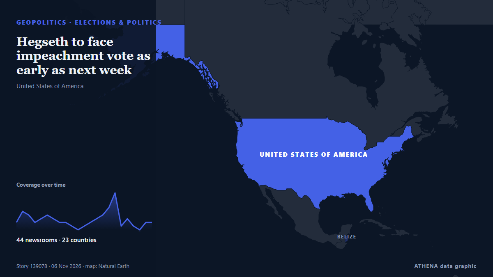

Élections et politique
SponsoriséPrésenté par  Cybernetics and Artificial Intelligence Lab Welcome to the Cybernetics and Artificial Intelligence Laboratory, established at the Department of Business Administration of the National and Kapodistrian University of Athens. The lab is headed by Professor Dimitrios Thomakos. The lab aims to do research that can be published in top venues. Our research uses tools and methods of Artificial Intelligence, and lies in the following areas: - Forecasting - Decision making - Cyber security - Finance We are always looking forward to collaborating with exceptional students!
Cybernetics and Artificial Intelligence Lab Welcome to the Cybernetics and Artificial Intelligence Laboratory, established at the Department of Business Administration of the National and Kapodistrian University of Athens. The lab is headed by Professor Dimitrios Thomakos. The lab aims to do research that can be published in top venues. Our research uses tools and methods of Artificial Intelligence, and lies in the following areas: - Forecasting - Decision making - Cyber security - Finance We are always looking forward to collaborating with exceptional students!
| 24 oct. | 1 |
|---|---|
| 25 oct. | 0 |
| 26 oct. | 1 |
| 27 oct. | 0 |
| 28 oct. | 1 |
| 29 oct. | 1 |
| 30 oct. | 3 |
| 31 oct. | 2 |
| 1 nov. | 3 |
| 2 nov. | 3 |
| 3 nov. | 8 |
| 4 nov. | 1 |
| 5 nov. | 0 |
| 6 nov. | 0 |
Les titres sont affichés en anglais, tels que publiés.

Hegseth to face impeachment vote as early as next week
Relayé par 47 médias dans 23 pays depuis le 4 nov. Premier à l'annoncer : Breaking Belize News. ATHENA évalue le risque à 7.5/10 (élevé), avec 92 % de confiance.
Trump loses control of Congress
If Republicans lose control of Congress, the rest of his time in office is likely to be consumed by Democratic-led investigations into his administration and his business dealings, and possibly even… de PBS NewsHour
Iran's chief negotiator says Americans voted 'no to war'
Iran's chief negotiator in talks with the US has said that Americans voted "NO TO WAR", after President Donald Trump's Republican Party suffered a stunning defeat in the midterm elections. de MyJoyOnline
UK PM Burnham says he is ‘open’ to formal apology for slavery, but rules out reparations
At least 12.5 million Africans were abducted and sold into slavery. de Express Tribune
US Midterms: Democrats take control of US Congress as voters reject Trump’s Republicans
Democrats have taken control of both chambers of the United States Congress in the November 3, 2026, midterm elections, dealing a major political setback to President Donald Trump and his Republican… de Vanguard
Iran’s IRGC says two tankers, tugboat were ablaze in Hormuz Strait
Kayhan argued that issues related to Iran and the Strait of Hormuz have become a significant factor in the American midterm elections. de Tehran Times
Democrats projected to take over control of US House of Representatives
Control of the House depends on which party reaches the 218 seats necessary, while the Senate requires 51 for Democrats or 50 for Republicans because of Vice President JD Vance's tiebreaking vote. de PBS NewsHour
Republican US House speaker to step down after midterm rout
Mike Johnson, second in the line of presidential succession, previously suggested he might remain party leader even if Democrats won control. de Free Malaysia Today
Democrats take House and Senate from Republicans in US midterm rout
Democrats will control both chambers of Congress after flipping seats in Republican strongholds across the US in an election seen as a repudiation of President Donald Trump. de DW English
Keisha Bottoms makes history as first Black woman elected US governor
Democrat Keisha Lance Bottoms and Republican Rick Jackson are running to be Georgia’s next governor in a race that could reshape control of a crucial battleground state and even make some history… de The National Herald
What Americans are saying about how they voted in the midterm elections
Pope Leo XIV, the Catholic Church's first US-born pontiff, has voted in the United States midterm elections, submitting his mail-in ballot in Chicago, the Vatican confirmed. de RTÉ News
Spain’s Sanchez reshuffles cabinet after transport minister quits over train crashes
Puente said he had decided to resign after the Urda crash and would not stand in the Nov 29 election. de The Straits Times
Democrat James Talarico wins Texas Senate seat
Democrat James Talarico has won the Senate seat in Texas, according to a race call by the Associated Press. de NPR
Lone Star turns blue: Democrats Talarico, Hinojosa topple Texas Republicans
Democrat James Talarico, a former schoolteacher and Presbyterian seminarian who campaigned on a “politics of love,” on Tuesday won the US Senate race in Texas, dealing a historic blow to Republicans… de Dawn
US Midterms: Trump accepts midterm results, pledges to work with Democrats
Democrats remain ahead in national polls as Trump and candidates make their final push in the days before polling day. de Al Jazeera English
First polls close in closely watched U.S. midterm elections
The US midterm elections next month could change the course of American politics at home and – and American policy abroad. de The National